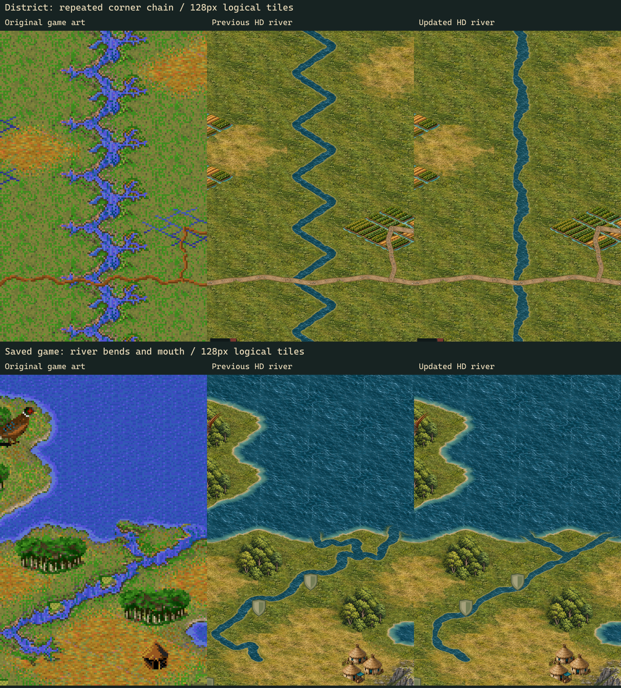

Native and HD river artwork
Four-stage gallery · Course and preservation checks · Native joins · Riverbanks at two zooms
Alternating corner tiles previously pulled the river towards each tile centre, producing a repeated sawtooth. Shallower asymmetric curves reduce that excursion, while irregular widths, bank relief and a shallow-water fringe soften the channel. Logical ports and radial endpoint tangents remain fixed across all sixteen masks. This changes artwork, not source rendering rules or the separately proposed world-space river geometry. The original renderer still repeats the same masks; it cannot vary a long river independently of tile topology.
